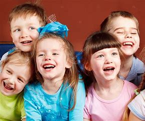

Through this program, students engaged in programming with Scratch to create interactive animations that reflected aspects of Tibetan culture. They developed renditions of the Tibetan alphabet, the Dharma Wheel, and the Himalaya Mountains. Utilizing tools such as the Pen and creating custom blocks, students scripted animated sprites, shapes, and creative dialogue. Additionally, students had the opportunity to meet and speak with guest speakers on exploring their Tibetan identity through storytelling. These interactions enriched the student’s understanding of how to integrate cultural elements into their projects while addressing broader community needs. Over this summer, we enhanced our technical skills while deepening our appreciation and knowledge of Tibet's rich history and culture. We connected more meaningfully to our heritage while advancing our programming expertise.
Taking On Challenges
We kick off the class with engaging tasks and challenges in Scratch. Over the past month, we have completed several Scratch projects, including "Fix it," "Tibetan Alphabet," "Collecting Only Yellow," and "Debug." These were our favorite! In these projects, we focus on identifying and fixing broken codes, ensuring they function properly. These activities help us build a solid foundation in coding concepts
Communication
We used communication both in Scratch and while collaborating with our classmates. In groups, we planned daily activities and divided our roles every morning. In Scratch, we facilitated communication between our sprites and other programming elements. We learned just how important effective communication is to achieving success, both in AI projects and in real world scenarios.
Critical Thinking
When faced with a complex project, our teacher taught us that breaking it into smaller, more manageable components makes it easier to understand and tackle. For instance, in our maze project, we started by designing the background, then programmed the sprite's movement, and finally added a timer as an extra challenge. It not only made the project less overwhelming but helped us develop our problem-solving skills.
Web Devlopment and Tools
In addition to Scratch, GitHub is an essential tool used in our classroom community. We built our own websites using Github and utilized Sublime Text for coding and text editing, diving into the structure of different coding languages like HTML. This hands-on experience taught us how different coding languages work together to create functional and visually appealing websites.